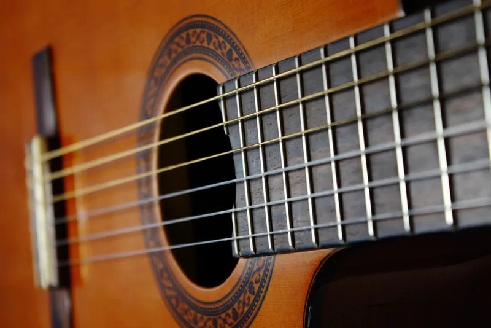
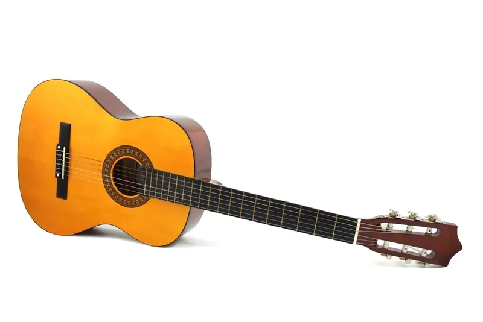
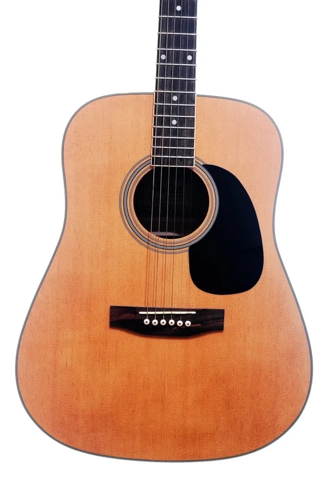

¿Guitarra española o acústica? Diferencias y cuál elegir
Actualizado el
¿Guitarra española o acústica? Es la duda más habitual al comprar la primera guitarra, porque a simple vista se parecen mucho. Las dos suenan sin amplificador y tienen una caja hueca de madera, pero no son iguales: cambian las cuerdas, el sonido, la anchura del mástil y el tipo de música para el que sirven. Te explicamos las diferencias y te recomendamos tres modelos para empezar en la música sin equivocarte.
Diferencias entre guitarra española y acústica
Cuerdas: nailon frente a acero
Es la diferencia principal. La guitarra española, también llamada guitarra clásica, lleva cuerdas de nailon: son blandas y no hacen daño en los dedos. La acústica lleva cuerdas de acero: suenan más fuerte pero, al principio, duelen un poco hasta que se te endurecen las yemas.
Sonido
La española tiene un sonido cálido y suave, el de la música clásica, el flamenco o la bossa nova. La acústica suena más brillante y potente, el sonido de los cantautores y del pop o el rock acústico.
Mástil y comodidad para principiantes
El mástil de la española es más ancho y plano, lo que deja más espacio entre cuerdas pero obliga a abrir más la mano. La acústica tiene el mástil más estrecho, más parecido al de una eléctrica. Ninguna es «más fácil» del todo: la española es más amable con los dedos y la acústica con la mano.
Las 3 mejores para empezar en la música
Mejor guitarra española (clásica): Yamaha C40II

Es probablemente la guitarra española más recomendada para principiantes en España, y la que muchas escuelas de música piden para empezar. Afina bien, es resistente y tiene un precio muy razonable. Si quieres una española y no quieres complicarte, es esta.
Ventajas
- La referencia para empezar con guitarra clásica
- Buena calidad de construcción para su precio
Inconvenientes
- No incluye funda
- Las cuerdas que trae de fábrica mejoran mucho si las cambias
La guitarra española más barata: Valencia VC204

Si el presupuesto es lo primero, la Valencia VC204 cuesta unos 95 € y cumple para aprender. No tiene el acabado de la Yamaha, pero es una guitarra correcta para descubrir si la música es lo tuyo antes de invertir más.
Ventajas
- El precio más bajo de la comparativa
- Tamaño completo (4/4), sirve para adultos
Inconvenientes
- Sonido y acabados más sencillos
- Puede necesitar ajuste para que las cuerdas no queden altas
Mejor guitarra acústica: Yamaha F310

Si lo tuyo es cantar y acompañarte con acordes, la Yamaha F310 es la acústica de iniciación más popular. Suena potente y brillante, como se espera de una acústica, y tiene la calidad que caracteriza a Yamaha en su gama más económica.
Ventajas
- Sonido potente, ideal para acompañar canciones
- Muy buena relación calidad-precio
Inconvenientes
- Las cuerdas de acero duelen las primeras semanas
- No incluye funda ni afinador
¿Cuál es mejor, acústica o clásica?
Ninguna es mejor en general: depende de la música que quieras tocar.
Si quieres tocar flamenco o clásica
Elige una guitarra española. Es la que se usa en el conservatorio y en las escuelas de música, y el flamenco y la música clásica están pensados para el sonido del nailon. También es la mejor opción para niños: tienes los tamaños en nuestra guía de guitarra para niños.
Si quieres acompañar canciones pop o rock
Elige una acústica. Su sonido brillante es el de la mayoría de canciones que escuchas en la radio tocadas «en acústico». Y si lo que de verdad te tira es el rock con distorsión, quizá lo tuyo sea una guitarra eléctrica para principiantes.